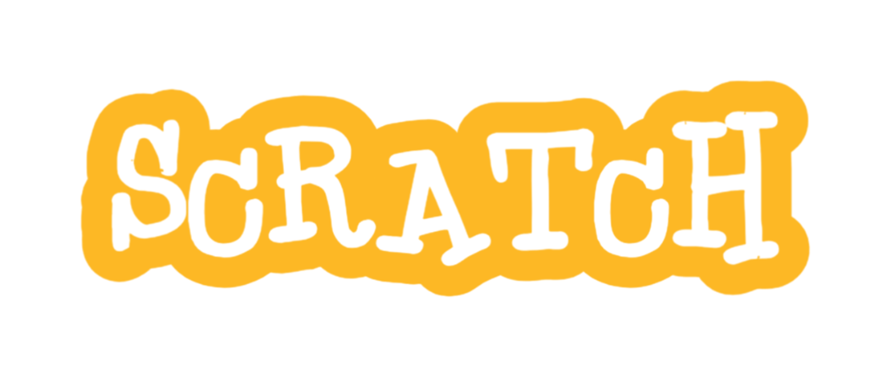

About
Documentation
Updates
Credits
Community
CREDITS
The STEAMist
: Outline and 3D spin tutorial.
Videos here:
Officel_Scratchtube on scratch
: For the inspiration
Project here:
I had to use TurboWarp to embed this project because I feel like turbowarp is faster than scratch
Click this button to see the project on scratch
Scratch.mit.edu
belongs to the Scratch foundation and MIT
Scratch foundation and MIT: Inspiration for the logo
Mine

Scratch Foundation and MIT
www.textstudio.com
- The website used to edit the scratch logo
The font name used in the scratch and script logo is Black Boys On Mopeds Regular
papipupepappa on Scratch
- For providing and archiving some of the sounds from Scartch 1.4 and costumes from Scratch 2.0
Projects here:
View the project in Scratch
View the project in the Scratch editor
View the project in Scratch
View the project in the Scratch editor
I had to use TurboWarp to embed this project because I feel like turbowarp is faster than scratch
NoxOSdev on Scratch
- Making 3 new sprites
Click this button to see the project on scratch
Thank you and the supporters for giving the ideas for this language
And of course, myself, NithikaD (Niki182 on github) for creating this programming language on Scratch